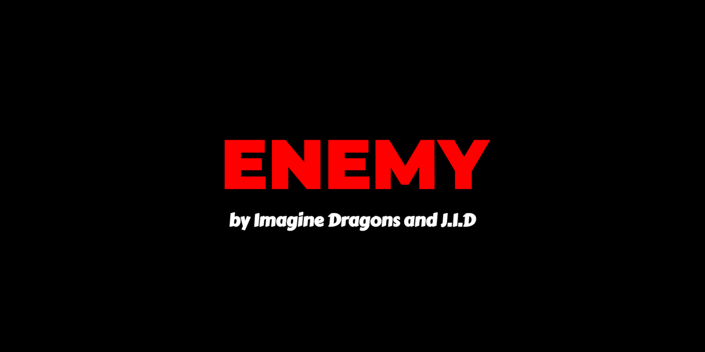

Lyrics video via JavaScript
Voor Vormgeving 2 moesten we een songtekst van een liedje naar keuze gaan vormgeven. Ik heb voor het liedje Enemy van Imagine Dragons gekozen. Deze heb ik vormgegeven met CSS en synchroon met het geluid laten lopen doormiddel van JavaScript.
Ik wou mezelf een kleine uitdaging geven om te kijken of ik dit kon maken met JavaScript (dit is gelukt! 😀). De grootste tijd zat in het timen van de tekst op het goede moment van het liedje. Dan zou de tekst op het scherm moeten komen net zoals bij een lyrics video.